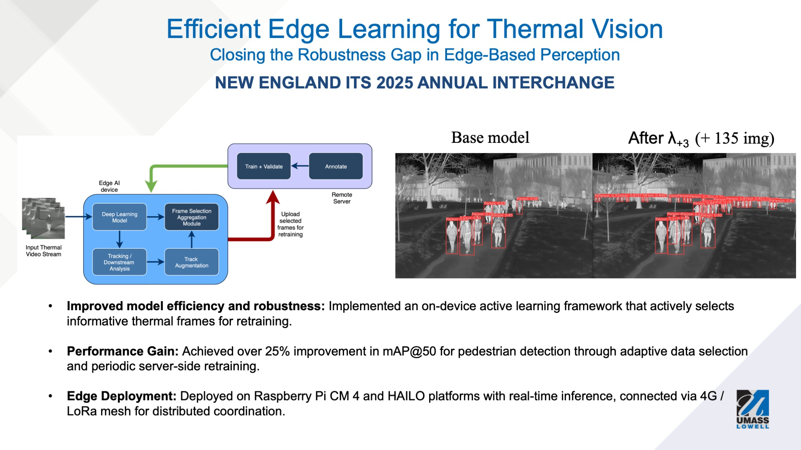

Efficient Edge Learning for Thermal Vision
Invited Talk: 27th NEITS Annual Interchange (October 2025)
We present a lightweight, submodular active learning framework for improving person detection models on edge devices by identifying and incorporating uncertain or underrepresented instances from deployment environments.
Project Overview
This research focuses on developing efficient machine learning techniques that can operate on resource-constrained edge devices while continuously improving their performance through intelligent data selection and model refinement strategies.
Key Features
- Submodular active learning framework
- Edge device optimization
- Selective sampling algorithms
- Clustering-based data selection
- Model distillation techniques
- Minimal supervision requirements